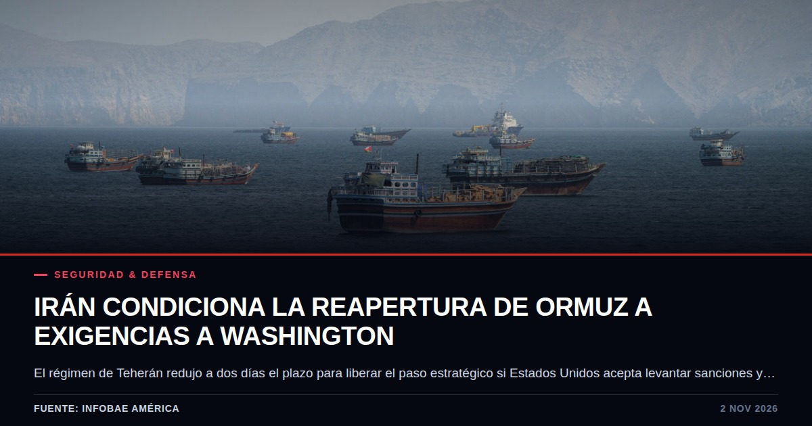

Irán condiciona la reapertura del estrecho de Ormuz a la aceptación de exigencias por parte de Washington
Teherán redujo a dos días el plazo para liberar la ruta de hidrocarburos si Estados Unidos acepta levantar sanciones y reducir su presencia militar. Las negociaciones indirectas en Doha ocurren bajo un nuevo liderazgo y en la antesala de los comicios legislativos estadounidenses.

Datos clave
- El estrecho de Ormuz permanece bloqueado por Teherán desde el inicio de la guerra el 28 de febrero de 2026.
- El portavoz de la Cancillería iraní, Esmail Baqai, planteó un plazo de dos días para la reapertura si se aceptan las condiciones.
- El viceministro de Asuntos Exteriores, Kazem Gharibabadi, viajó a Doha para facilitar las comunicaciones indirectas.
- Mojtaba Khamenei, de 56 años, fue designado líder supremo el 8 de marzo y otorgó ciertos poderes al Gobierno para las negociaciones.
Qué pasó
El régimen de Irán anunció que está dispuesto a reabrir el estrecho de Ormuz en un plazo de dos días si Estados Unidos acepta una serie de condiciones destinadas a detener las hostilidades y levantar el bloqueo naval. Según informó el portavoz de la Cancillería iraní, Esmail Baqai, la propuesta reduce un ultimátum previo de siete días presentado en septiembre a través de la mediación de Qatar.
El intercambio de mensajes se lleva a cabo mediante mediadores en Doha, hasta donde se desplazó el viceministro de Asuntos Exteriores, Kazem Gharibabadi. Las demandas iraníes abarcan el cese del bloqueo estadounidense, el alivio de las sanciones petroleras, el descongelamiento de activos en el extranjero y la aceptación de un nuevo itinerario de navegación acordado con Omán.
El contexto
El estrecho de Ormuz constituye una vía central para el suministro mundial de hidrocarburos y se encuentra bajo control militar iraní desde el comienzo de la guerra, desatada tras los ataques de Estados Unidos e Israel contra territorio de Irán el 28 de febrero de 2026. Desde entonces, las fuerzas de Teherán han interceptado y atacado embarcaciones que intentaban cruzar la zona sin autorización.
Este movimiento diplomático se produce en paralelo a una transición de poder en la cúspide del régimen. El presidente iraní, Masoud Pezeshkian, confirmó que el nuevo líder supremo, Mojtaba Khamenei —designado el 8 de marzo tras la muerte de su padre Ali Khamenei en los compases iniciales del conflicto—, ha conferido facultades específicas al Ejecutivo para gestionar las conversaciones con Washington.
El punto ciego
Detrás de la aparente flexibilidad diplomática transmitida por el gobierno iraní se esconde la necesidad urgente de mitigar el colapso económico derivado de las sanciones energéticas y el bloqueo naval. La reducción del plazo de siete a dos días coincide deliberadamente con la recta final de las elecciones de mitad de mandato en Estados Unidos, donde el presidente Donald Trump ha afirmado que no ordenará nuevas acciones militares inmediatas, aunque mantiene abierta la posibilidad de futuros golpes contundentes.
La participación de Mojtaba Khamenei, estrechamente vinculado a la Guardia Revolucionaria, evidencia que las concesiones tácticas en la mesa de negociación no implican una renuncia al control estratégico del Golfo Pérsico, sino un intento de institucionalizar una nueva correlación de fuerzas antes de que el ciclo electoral estadounidense cierre el margen para acuerdos bilaterales.
Quién gana y quién pierde
En el plano inmediato, el régimen iraní busca asestar un golpe propagandístico y financiero al conseguir el descongelamiento de activos y la relajación del cerco petrolero sin comprometer su rearme interno. Por su parte, Washington asume el coste político de mantener un bloqueo que estrangula los mercados energéticos globales mientras gestiona la presión electoral interna.
Los intermediarios cataríes y omaníes consolidan su rol como ejes diplomáticos indispensables en Oriente Medio, mientras que las navieras internacionales continúan soportando la incertidumbre sobre la seguridad de una de las rutas marítimas más transitadas del planeta.
Qué vigilar
Los próximos movimientos dependerán de la respuesta formal que la administración estadounidense articule a través de los mediadores en Doha tras la conclusión de las elecciones de mitad de mandato. Cualquier desacuerdo en el itinerario de navegación propuesto por Omán o en el calendario de levantamiento de sanciones reactivará de inmediato la confrontación directa en el golfo Pérsico.
Asimismo, será determinante observar si la Guardia Revolucionaria acata de manera efectiva los términos de un eventual entendimiento o si mantiene su política de hostigamiento a la navegación comercial en la zona.
Fuentes consultadas
- Infobae América: El régimen de Irán dijo que reabrirá el estrecho de Ormuz en dos días si Estados Unidos acepta sus condiciones
- Infobae: El régimen de Irán dijo que reabrirá el estrecho de Ormuz en dos días si Estados Unidos acepta sus condiciones
- Diario Neuquino: Irán ofrece reabrir el estrecho de Ormuz en 48 horas si Estados Unidos acepta sus condiciones
- Infobae: Donald Trump sostuvo que “en algún momento” EEUU tendrá que darle “un golpe contundente” al régimen de Irán
- Infobae: Irán dijo que una nueva guerra con Estados Unidos podría durar más que la anterior y condicionó la reapertura de Ormuz
Te puede interesar

Silicon Valley asume el control de la infraestructura cívica con salas de crisis electorales
OpenAI y Anthropic inauguraron centros de operaciones dedicados a vigilar el comportamiento de sus chatbots ante las elecciones de Estados Unidos. Esta intervención consolida un cambio estructural donde empresas privadas gestionan la estabilidad informativa y el arbitraje democrático.

Caída de avión ejecutivo en West Palm Beach reabre debate sobre seguridad aérea
Un Learjet 60 con nueve personas a bordo se estrelló tras perder más de 8.000 metros de altitud en solo un minuto. La NTSB encabeza la investigación para esclarecer las causas de este desastre en la aviación privada.

El dilema de la memoria RAM y la centralización del poder de cómputo según OpenAI
Sam Altman cuestiona la eficiencia de mantener memoria DRAM inactiva en equipos personales frente a la escasez global. Detrás de los argumentos de optimización se vislumbra la defensa del modelo de negocio en la nube.